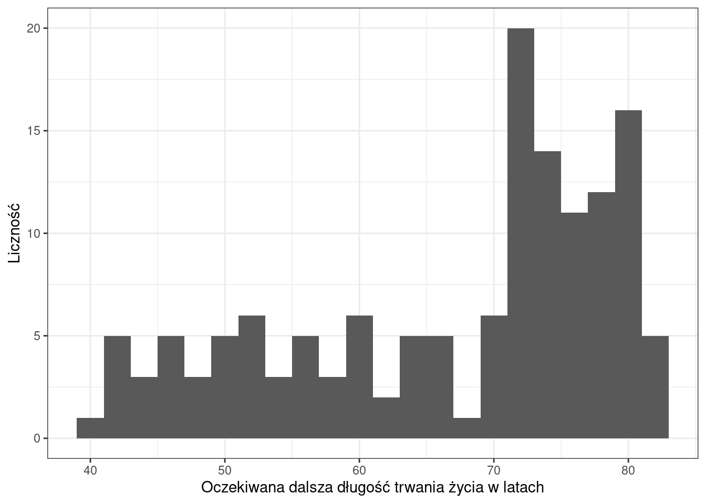
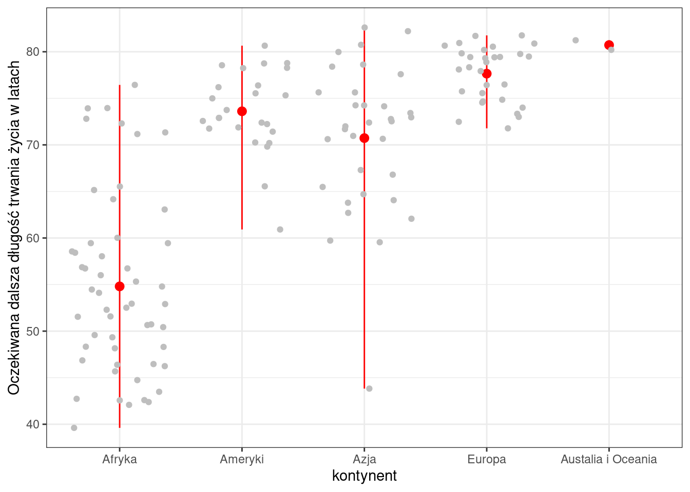
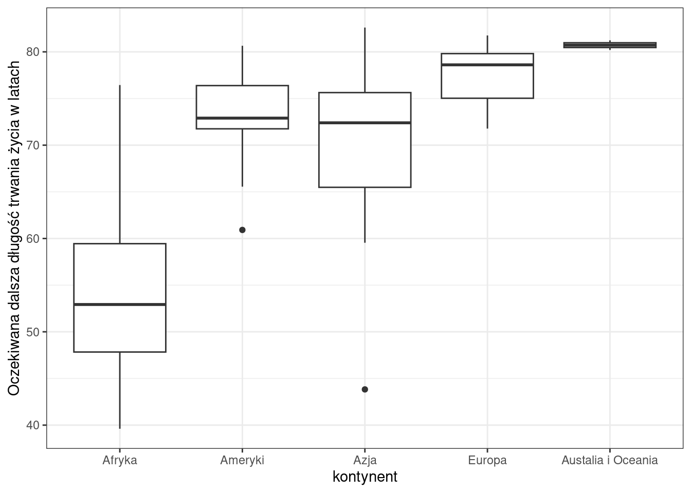
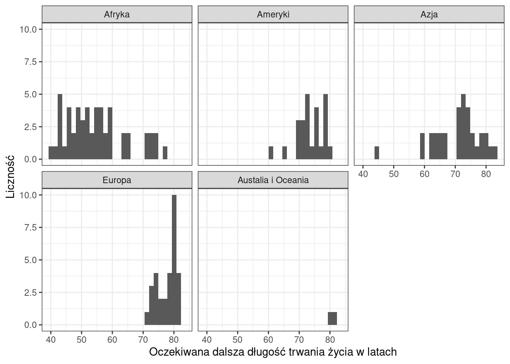

21Analiza statystyczna długości trwania życia na świecie w 2007 roku.
Author
Anna Dmowska
1 Wprowadzenie
Oczekiwana dalsza długość trwania życia (ang. life expectancy) jest jedną z miar stosowaną m.in w badaniach demograficznych. Określa ona średnią liczbę lat życia jaka pozostała osobnikowi w danym wieku. Oczekiwana dalsza długość trwania życia w momencie narodzin (ang. life expectancy at birth) odnosi się do średniej liczby lat, jaką spodziewa się, że przeżyje noworodek przy założeniu, że w przyszłości poziom umieralności będzie stale na tym samym poziomie. W przypadku oczekiwanej dalszej długość trwania życia w momencie narodzin (ang. life expectancy at birth) miara ta jest także miarą średniej długości trwania życia w danej populacji.
Oczekiwana dalsza długość trwania życia w momencie narodzin zależy od wielu czynników, m.in czynniki środowikowe, dostęp do opieki medycznej, poziom dochodów. Wartość ta zmienia się na przestrzeni lat, jak również regionalnie.
Celem niniejszej analizy jest scharakteryzowanie oczekiwanej dalszej długości trwania życia w momencie narodzin (ang. life expectancy at birth) w 142 krajach na podstawie danych z 2007 roku. W pierwszym etapie przeprowadzono analizę dla wszystkich krajów, a następnie w podziale na kontynenty.
2 Dane
Analizę przeprowadzono w oparciu o dane pochodzące z pakietu gapminder. Dane te dostarczają informacji o oczekiwanej dalszej długości trwania życia w momenci narodzin (ang. lifeExp), produkcie krajowym brutto (ang. gdpPercap), liczbie ludności (ang. pop) w 142 krajach w latach 1952-2007. Dane pochodzą z projektu GAPMINDER (http://www.gapminder.org/data/).
3 Metody
Analiza statystyczna danych została wykonana w środowisku R. Podczas analizy i wizualizacji wyników wykorzystano funkcje zawarte w pakietach podstawowych oraz użyto następujące pakiety:
pakiet gapminder - dostarcza danych do analizy.
pakiet ggplot2 - pozwala na wizualizację wyników.
pakiet e1071 - zawiera funkcje do obliczania skośności oraz kurtozy
pakiet dplyr - dostarcza funkcji do obliczenia statystyk w grupach.
4 Charakterystyka oczekiwanej dalszej długości trwania życia w momencie narodzin.
W roku 2007 oczekiwana dalsza długość trwania życia w momencie narodzin (w dalszej częsci będzie stosowany skrót ODDTZn) mieściła się w przedziale 39,61 - 82,60 lat. Średnia wartość ODDTZn w 2007 roku wynosiła 67 lat +/- 12,07 lat (wartość odchylenia standardowego). Krajem o najkrótszej oczekiwanej dalszej długości trwania życia było Suazi (Afryka). Najdłużej żyją mieszkańcy Japoni. Analizując wartości kwartyli możemy zauważyć, że w 3/4 krajów ludzie żyją powyżej 57 lat, a w 1/4 krajów powyżej 76,41 lat. Wartość mediany wskazuje, że w połowie krajów na świecie oczekiwana dalsza długość trwania życia w momencie narodzin przekracza 71,94 lat.
Code
#wczytanie i selekcja danychdata("gapminder", package ="gapminder")dane2007 <- gapminder[gapminder$year==2007,]#wprowadzenie polskich nazw kontynentów dane2007$continent <- plyr::revalue(dane2007$continent, c("Africa"="Afryka", "Americas"="Ameryki", "Asia"="Azja", "Europe"="Europa", "Oceania"="Austalia i Oceania"))#statystyki podstawowe smr <-summary(dane2007$lifeExp)dane2007_ord <-arrange(dane2007, lifeExp)#kraje o najniższych wartościachnajkrocej <-head(dane2007_ord,20)#kraje o najwyższych wartościachnajdluzej <-tail(dane2007_ord,20)#kwantyle kwantyle <-quantile(dane2007$lifeExp, probs=seq(0,1,0.1))#miary zmienności sd <-sd(dane2007$lifeExp)iqr <-IQR(dane2007$lifeExp)#skośność i kurtoza sk <-skewness(dane2007$lifeExp)kurt <-kurtosis(dane2007$lifeExp)
Code
# dodac label fig- aby odwolac sie w tekscie do ryciny#| label: fig-histogram#| fig-cap: "Rozkład wartości oczekiwanej dalszej długości trwania życia na świecie w 2007 roku"#| out-width: '500px'#| message: false #| warning: falseggplot(dane2007, aes(x=lifeExp)) +geom_histogram(binwidth=2) +labs(x ="Oczekiwana dalsza długość trwania życia w latach", y ="Liczność") +theme_bw()

Rozkład wartości w poszczególnych grupach wiekowych został także przedstawiony na histogramie (Ryc. fig-histogram). Histogram wyraźnie pokazuje 2 grupy krajów - te, w których oczekiwana długość trwania życia jest poniżej 70 lat i te, w których przekracza 70 lat.
Wyliczone wartości współczynnika skośności (-0.67) oraz kurtozy (-0.87) wskazują na rozkład asymetryczny lewostronnie i bardziej spłaszczony niż rozkład normalny.
5 Charakterystyka oczekiwanej dalszej długości trwania życia w momencie narodzin w podziale na kontynenty
W następnym etapie wartości oczekiwanej dalszej długości trwania życia w momencie narodzin zostały przeanalizowane w podziale na kontynenty. Tabela tbl-stat-kontynenty przedstawia zestawienie podstawowych statystyk opisowych (średniej, mediany, wartości minimalnej oraz maksymalej) dla poszczególnych kontynentów. Należy zwrócić uwagę, że Oceania w analizowanym zbiorze danych reprezentowana jest przez 2 państwa, a Ameryka Północna, Środkowa i Południowa rozpatrywana jest współnie (w analizowanym zbiorze danych określona jest jako “Americas”).
Code
#ANALIZA W PODZIALE NA KONTYNENTYby_kontynent <-group_by(dane2007, continent)stat_lifeExp_by_kontynent <-summarise(by_kontynent, średnia =mean(lifeExp), mediana =median(lifeExp),min =min(lifeExp), max =max(lifeExp),zakres=max(lifeExp)-min(lifeExp), IQR =IQR(lifeExp))colnames(stat_lifeExp_by_kontynent) <-c("Kontynent", "Średnia", "Mediana", "Minimum", "Maksimum", "Zakres", "IQR")
Code
# dodac label tbl- aby odwolac sie w tekscie do tabeli#| label: tbl-stat-kontynenty#| tbl-cap: "Statystyki opisowe dla ODDTZn w 2007 roku według kontynentów."#| message: false #| warning: falsestat_lifeExp_by_kontynent %>%mutate_if(is.numeric, round, 2) %>%flextable() %>%theme_vanilla()
Kontynent
Średnia
Mediana
Minimum
Maksimum
Zakres
IQR
Afryka
54.81
52.93
39.61
76.44
36.83
11.61
Ameryki
73.61
72.90
60.92
80.65
19.74
4.63
Azja
70.73
72.40
43.83
82.60
38.77
10.15
Europa
77.65
78.61
71.78
81.76
9.98
4.78
Austalia i Oceania
80.72
80.72
80.20
81.24
1.03
0.52
Code
#t <- kbl(stat_lifeExp_by_kontynent, digits = 2, caption = "Statystyki opisowe dla ODDTZn w 2007 roku według kontynentów.")#kable_classic(t, full_width = F, html_font = "Cambria")
Porównanie oczekiwanej dalszej długości trwania życia w krajach w podziale na kontynenty pokazuje także wykres na rycinie Ryc. 21.1, Ryc. 21.2, Ryc. 21.3. Ryc. 21.1 przedstawia rozkład wartości średnich (czerwony punkt) oraz zakres wartości. Ryc. 21.2 pozwala na porównie zakresów 5 statystyk podstawowych: kwartyla 1, mediany, kwartyla 3 oraz wartości minimalnej oraz maksymalnej, a zakres pudełka pokazuje rozstęp międzykwartylowy (IQR).
Code
dane2007 %>%ggplot(aes(x = continent, y = lifeExp)) +stat_summary(fun = mean, geom ="pointrange", fun.min = min, fun.max = max, color ="red") +geom_jitter(col ="grey") +labs(x ="kontynent", y ="Oczekiwana dalsza długość trwania życia w latach") +theme_bw()

Rycina 1: Oczekiwanej dalszej długości trwania życia w roku 2007 w podziale na kontynenty. Kolorem czerwonym zaznaczono rozrzut wartości minimalnych, maksymalnych oraz średnią. Kolorem niebieskim zaznaczono rozstęp międzykwartylowy
Code
ggplot(dane2007, aes(x = continent, y=lifeExp)) +geom_boxplot() +labs(x ="kontynent", y ="Oczekiwana dalsza długość trwania życia w latach") +theme_bw()

Rycina 2: Porównanie oczekiwanej dalszej długości trwania życia w roku 2007 w podziale na kontynenty.
Code
ggplot(dane2007, aes(x = lifeExp)) +geom_histogram() +labs(x ="Oczekiwana dalsza długość trwania życia w latach", y ="Liczność") +facet_wrap(~continent, ncol =3) +theme_bw()

Rycina 3: Rozkład wartości oczekiwanej dalszej długości trwania życia w roku 2007 w podziale na kontynenty. Każdy panel przedstawia osobny kontynent
Analizując statystyki opisowe oraz wykresy zaznacza się wyraźna różnica między krajami Afryki, a pozostałymi obszarami. Różnica ta szczególnie widoczna jest na przedstawionych wykresach (Ryc. 21.1, Ryc. 21.2 ). Zakres wartości dla krajów afrykańskich określony przez pierwszy i trzeci kwartyl (górna i dolna podstawa pudełka na wykresie pudełkowym) nie pokrywa się z pozostałymi kontynentami. Widoczne to jest także na histogramie na ryc. 4 (kolor czerwony (Afryka) w niewielkim stopniu zachodzi na zakres wartości przypisanych do Ameryk i Azji).
Najdłuższa oczekiwana długość trwania życia jest w Oceani. Należy jednak zwrócić uwage, że są to tylko 2 kraje (Australia oraz Nowa Zelandia). W krajach Europy oczekiwana długość trwania życia mieści się w zakresie 71,77 - 81,75 (średnio 77,64). W krajach azjatyckich oczekiwana długość trwania życia mieści się w przedziale od 59 lat do 82,6 lat. Jedynie w Afganistanie oczekiwana długość trwania życia wynosi 43 lata. W krajach Ameryk Północnej i Południowej ludzie przeciętnie żyją 73,6 lat (najkrócej - 60 lat na Haiti, najdłużej 80,65 w Kanadzie). Kontynent afrykański cechuje się bardzo zróżnicowanym zakresem wartości oczekiwanej długości trwania życia (39,6-76,44, średnio 54,8). W połowie krajów oczekiwana długość trwania życia mieści się w zakresie 47,83 do 59,44. Jedynie w 1/4 krajów Afryki ludzie żyją powyżej 59,44 lat.
Największy zakres wartości (wyrażony rostępem czyli różnicą miedzy wartością maksymalną oraz minimalną) cechuje Azję (38,75 lat) oraz Afrykę (36,82). Jednakże w przypadku Azji tak duża różnica spowodowana jest wystąpieniem jednej wartości odstającej (Afganistan z wartością 43 lata). Rozpatrując rozstęp kwartylowy największe wartości odnotowuje się dla Afryki (11,6 lat).
6 Podsumowanie
Przeprowadzona analiza oczekiwanej dalszej długości trwania życia dla danych z 2007 roku ukazała istnienie wielu regionalnych różnic. Do krajów o najkrótszej oczekiwanej dalszej długości trwania życia należą kraje afrykańskie. W dwudziestce krajów o najkrótszej oczekiwanej długości trwania życia z poza Afryki znajduje się tylko jedno państwo - Afganistan (43 lata). Do krajów o najdłuższej oczekiwanej dalsze długości trwania życia należą Japonia oraz Honkgong (powyżej 82 lat). W czółówce są także Islandia, Szwajcaria, Australia (powyżej 81 lat). W pierwszej dwudziestce znajduje się 13 krajów europejskich, 4 kraje azjatyckie, 2 z Oceani oraz 1 kraj z Ameryk (Kanada). Polska klasyfikuje się na 41 miejscu (wartość 75,56 lat).
Code
#Oczekiwana długość trwania życia w Polsce pl <- dane2007[dane2007$country=='Poland', "lifeExp"]pln <- dane2007[dane2007$lifeExp>75.563,]